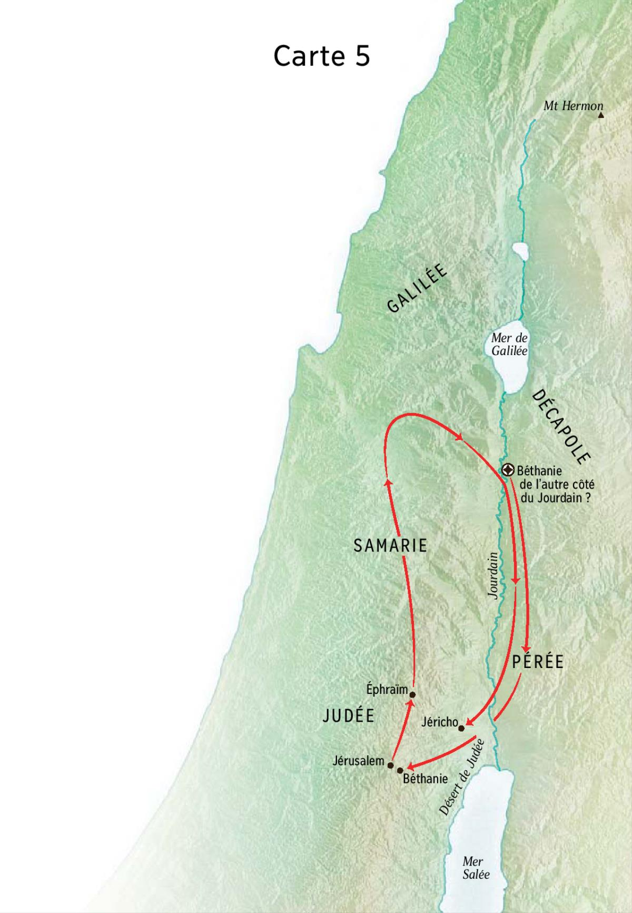

Judée

Carte 5
Voyage de Jésus pour la fête des Tabernacles
Date: +32 Septembre/Octobre
Lieu: Judée
Jean 7:1 : Le manque de foi des frères de Jésus
1 Dans la suite, Jésus continua à parcourir la Galilée ; il préférait en effet ne point parcourir la Judée, où les autorités juives cherchaient à le faire périr. 2 Or c’était bientôt la fête juive des Tentes. 3 Ses frères lui dirent : « Passe d’ici en Judée afin que tes disciples, eux aussi, puissent voir les œuvres que tu fais. 4 On n’agit pas en cachette quand on veut s’affirmer. Puisque tu accomplis de telles œuvres, manifeste-toi au monde ! » 5 En effet, ses frères eux-mêmes ne croyaient pas en lui. 6 Jésus leur dit alors : « Mon temps n’est pas encore venu ; votre temps à vous est toujours favorable. 7 Le monde ne peut pas vous haïr, tandis que moi, il me hait parce que je témoigne que ses œuvres sont mauvaises. 8 Montez donc à cette fête. Pour ma part, je n’y monterai pas, car mon temps n’est pas encore accompli. » 9 Après avoir ainsi parlé, il demeura en Galilée. 10 Mais lorsque ses frères furent partis pour la fête, il se mit en route, lui aussi, sans se faire voir et presque secrètement.
Jésus quitte la fête et enseigne dans le temple
Date: +32
Lieu: Judée
Jean 7:11 : Enseignements durant la fête des Tentes
11 Au cours de la fête, les autorités juives le cherchaient et on disait : « Où est-il donc ? » 12 Dans la foule, on discutait beaucoup à son propos ; les uns disaient : « C’est un homme de bien », d’autres : « Au contraire, il séduit la foule. » 13 Toutefois, personne n’osait parler ouvertement de lui, par crainte des autorités juives. 14 Alors qu’on était déjà au milieu de la fête, Jésus monta au temple et il se mit à enseigner.
Projets d’arrestation
Date: +32
Lieu: Judée
Jean 7:15 : Enseignements durant la fête des Tentes
15 Les autorités juives en étaient surprises et elles disaient : « Comment est-il si savant, lui qui n’a pas étudié ? » 16 Jésus leur répondit : « Mon enseignement ne vient pas de moi, mais de celui qui m’a envoyé. 17 Si quelqu’un veut faire la volonté de Dieu, il saura si cet enseignement vient de Dieu ou si je parle de moi-même. 18 Qui parle de lui-même cherche sa propre gloire ; seul celui qui cherche la gloire de celui qui l’a envoyé est véridique, et il n’y a pas en lui d’imposture. 19 N’est-ce pas Moïse qui vous a donné la Loi ? Or aucun de vous n’agit selon la Loi : pourquoi cherchez-vous à me faire mourir ? » 20 La foule lui répondit : « Tu es possédé d’un démon ! Qui cherche à te faire mourir ? » 21 Jésus reprit la parole et leur dit : « Je n’ai fait qu’une seule œuvre et tous vous êtes étonnés. 22 Moïse vous a donné la circoncision – encore qu’elle vienne des patriarches et non pas de Moïse – et vous la pratiquez le jour du sabbat. 23 Si donc un homme reçoit la circoncision un jour de sabbat sans que la Loi de Moïse soit violée, pourquoi vous irriter contre moi parce que j’ai guéri complètement un homme un jour de sabbat ? 24 Cessez de juger selon l’apparence, mais jugez selon ce qui est juste ! » 25 Des gens de Jérusalem disaient : « N’est-ce pas là celui qu’ils cherchent à faire mourir ? 26 Le voici qui parle ouvertement et ils ne lui disent rien ! Nos dirigeants auraient-ils vraiment reconnu qu’il est bien le Messie ? 27 Cependant celui-ci, nous savons d’où il est, tandis que, lorsque viendra le Messie, nul ne saura d’où il est. » 28 Alors Jésus, qui enseignait dans le temple, proclama : « Vous me connaissez ! Vous savez d’où je suis ! Et pourtant, je ne suis pas venu de moi-même. Celui qui m’a envoyé est véridique, lui que vous ne connaissez pas. 29 Moi, je le connais parce que je viens d’auprès de lui et qu’il m’a envoyé. » 30 Ils cherchèrent alors à l’arrêter, mais personne ne mit la main sur lui parce que son heure n’était pas encore venue. 31 Dans la foule bien des gens crurent en lui, et ils disaient : « Lorsque le Messie viendra, opérera-t-il plus de signes que celui-ci n’en a fait ? » 32 Ce qui se chuchotait dans la foule à son sujet parvint aux oreilles des Pharisiens : les grands prêtres et les Pharisiens envoyèrent alors des gardes pour l’arrêter. 33 Jésus dit : « Je suis encore avec vous pour un peu de temps et je vais vers celui qui m’a envoyé. 34 Vous me chercherez et vous ne me trouverez pas ; car là où je suis, vous ne pouvez venir. » 35 Les autorités juives dès lors se disaient entre elles : « Où faut-il donc qu’il aille pour que nous ne le trouvions plus ? Va-t-il rejoindre ceux qui sont dispersés parmi les Grecs ? Va-t-il enseigner aux Grecs ? 36 Que signifie cette parole qu’il a dite : “Vous me chercherez et vous ne me trouverez pas”, et “là où je suis, vous, vous ne pouvez venir” ? »
Jean 7:37 : Le dernier jour de la fête
37 Le dernier jour de la fête, qui est aussi le plus solennel, Jésus, debout, se mit à proclamer : « Si quelqu’un a soif, qu’il vienne à moi et que boive 38 celui qui croit en moi. Comme l’a dit l’Ecriture : “De son sein couleront des fleuves d’eau vive.” » 39 Il désignait ainsi l’Esprit que devaient recevoir ceux qui croiraient en lui : en effet, il n’y avait pas encore d’Esprit parce que Jésus n’avait pas encore été glorifié. 40 Parmi les gens de la foule qui avaient écouté ses paroles, les uns disaient : « Vraiment, voici le Prophète ! » 41 D’autres disaient : « Le Messie, c’est lui. » Mais d’autres encore disaient : « Le Messie pourrait-il venir de la Galilée ? 42 L’Ecriture ne dit-elle pas qu’il sera de la lignée de David et qu’il viendra de Bethléem, la petite cité dont David était originaire ? » 43 C’est ainsi que la foule se divisa à son sujet. 44 Quelques-uns d’entre eux voulurent l’arrêter, mais personne ne mit la main sur lui. 45 Les gardes revinrent donc vers les grands prêtres et les Pharisiens qui leur dirent : « Pourquoi ne l’avez-vous pas amené ? » 46 Les gardes répondirent : « Jamais homme n’a parlé comme cet homme. » 47 Les Pharisiens leur dirent : « Auriez-vous donc été abusés, vous aussi ? 48 Parmi les dirigeants ou parmi les Pharisiens, en est-il un seul qui ait cru en lui ? 49 Il y a tout juste cette masse qui ne connaît pas la Loi, des gens maudits ! » 50 Mais l’un d’entre les Pharisiens, ce Nicodème qui naguère était allé trouver Jésus, dit : 51 « Notre Loi condamnerait-elle un homme sans l’avoir entendu et sans savoir ce qu’il fait ? » 52 Ils répliquèrent : « Serais-tu de Galilée, toi aussi ? Cherche bien et tu verras que de Galilée il ne sort pas de prophète. »
Jean 7:53 : La femme adultère
53 Ils s’en allèrent chacun chez soi.
Femme adultère
Date: +32
Lieu: Judée
Jean 8:1 :
1 Et Jésus gagna le mont des Oliviers. 2 Dès le point du jour, il revint au temple et, comme tout le peuple venait à lui, il s’assit et se mit à enseigner. 3 Les scribes et les Pharisiens amenèrent alors une femme qu’on avait surprise en adultère et ils la placèrent au milieu du groupe. 4 « Maître, lui dirent-ils, cette femme a été prise en flagrant délit d’adultère. 5 Dans la Loi, Moïse nous a prescrit de lapider ces femmes-là. Et toi, qu’en dis-tu ? » 6 Ils parlaient ainsi dans l’intention de lui tendre un piège, pour avoir de quoi l’accuser. Mais Jésus, se baissant, se mit à tracer du doigt des traits sur le sol. 7 Comme ils continuaient à lui poser des questions, Jésus se redressa et leur dit : « Que celui d’entre vous qui n’a jamais péché lui jette la première pierre. » 8 Et s’inclinant à nouveau, il se remit à tracer des traits sur le sol. 9 Après avoir entendu ces paroles, ils se retirèrent l’un après l’autre, à commencer par les plus âgés, et Jésus resta seul. Comme la femme était toujours là, au milieu du cercle, 10 Jésus se redressa et lui dit : « Femme, où sont-ils donc ? Personne ne t’a condamnée ? » 11 Elle répondit : « Personne, Seigneur », et Jésus lui dit : « Moi non plus, je ne te condamne pas : va, et désormais ne pèche plus. »
Jésus au temple se déclare la lumière du monde ; les Juifs cherchent à le lapider
Date: +32
Lieu: Judée
Jean 8:12 : Jésus est la lumière du monde
12 Jésus, à nouveau, leur adressa la parole : « Je suis la lumière du monde. Celui qui vient à ma suite ne marchera pas dans les ténèbres ; il aura la lumière qui conduit à la vie. » 13 Les Pharisiens lui dirent alors : « Tu te rends témoignage à toi-même ! Ton témoignage n’est pas recevable ! » 14 Jésus leur répondit : « Il est vrai que je me rends témoignage à moi-même, et pourtant mon témoignage est recevable, parce que je sais d’où je viens et où je vais ; tandis que vous, vous ne savez ni d’où je viens ni où je vais. 15 Vous jugez de façon purement humaine. Moi, je ne juge personne ; 16 et s’il m’arrive de juger, mon jugement est conforme à la vérité parce que je ne suis pas seul : il y a aussi celui qui m’a envoyé. 17 Dans votre propre Loi il est d’ailleurs écrit que le témoignage de deux hommes est recevable. 18 Je me rends témoignage à moi-même, et le Père qui m’a envoyé me rend témoignage lui aussi. » 19 Ils lui dirent alors : « Ton Père, où est-il ? » Jésus répondit : « Vous ne me connaissez pas et vous ne connaissez pas mon Père ; si vous m’aviez connu, vous auriez aussi connu mon Père. » 20 Il prononça ces paroles au lieu dit du Trésor, alors qu’il enseignait dans le temple. Personne ne mit la main sur lui, parce que son heure n’était pas encore venue.
Jean 8:21 : Le départ de Jésus et le jugement
21 Jésus leur dit encore : « Je m’en vais ; vous me chercherez, mais vous mourrez dans votre péché. Là où je vais, vous ne pouvez aller. » 22 Les autorités juives dirent alors : « Aurait-il l’intention de se tuer puisqu’il dit : “Là où je vais, vous ne pouvez aller” ? » 23 Jésus leur répondit : « Vous êtes d’en bas ; moi, je suis d’en haut ; vous êtes de ce monde, moi je ne suis pas de ce monde. 24 C’est pourquoi je vous ai dit que vous mourrez dans vos péchés. Si, en effet, vous ne croyez pas que Je Suis, vous mourrez dans vos péchés. » 25 Ils dirent alors : « Toi, qui es-tu ? » Jésus leur répondit : « Ce que je ne cesse de vous dire depuis le commencement. 26 En ce qui vous concerne, j’ai beaucoup à dire et à juger ; mais celui qui m’a envoyé est véridique, et ce que j’ai entendu auprès de lui, c’est cela que je déclare au monde. » 27 Ils ne comprirent pas qu’il leur avait parlé du Père. 28 Jésus leur dit alors : « Lorsque vous aurez élevé le Fils de l’homme, vous connaîtrez que Je Suis et que je ne fais rien de moi-même : je dis ce que le Père m’a enseigné. 29 Celui qui m’a envoyé est avec moi : il ne m’a pas laissé seul, parce que je fais toujours ce qui lui plaît. » 30 Alors qu’il parlait ainsi, beaucoup crurent en lui.
Jean 8:31 : La véritable postérité d’Abraham
31 Jésus donc dit à ces Juifs qui avaient cru en lui : « Si vous demeurez dans ma parole, vous êtes vraiment mes disciples, 32 vous connaîtrez la vérité et la vérité fera de vous des hommes libres. » 33 Ils lui répliquèrent : « Nous sommes la descendance d’Abraham et jamais personne ne nous a réduits en esclavage : comment peux-tu prétendre que nous allons devenir des hommes libres ? » 34 Jésus leur répondit : « En vérité, en vérité, je vous le dis, celui qui commet le péché est esclave du péché. 35 L’esclave ne demeure pas toujours dans la maison ; le fils, lui, y demeure pour toujours. 36 Dès lors, si c’est le Fils qui vous affranchit, vous serez réellement des hommes libres. 37 Vous êtes la descendance d’Abraham, je le sais ; mais parce que ma parole ne pénètre pas en vous, vous cherchez à me faire mourir. 38 Moi, je dis ce que j’ai vu auprès de mon Père, tandis que vous, vous faites ce que vous avez entendu auprès de votre père ! » 39 Ils ripostèrent : « Notre père, c’est Abraham. » Jésus leur dit : « Si vous êtes enfants d’Abraham, faites donc les œuvres d’Abraham. 40 Or, vous cherchez maintenant à me faire mourir, moi qui vous ai dit la vérité que j’ai entendue auprès de Dieu ; cela Abraham ne l’a pas fait. 41 Mais vous, vous faites les œuvres de votre père. » Ils lui répliquèrent : « Nous ne sommes pas nés de la prostitution ! Nous n’avons qu’un seul père, Dieu ! » 42 Jésus leur dit : « Si Dieu était votre père, vous m’auriez aimé, car c’est de Dieu que je suis sorti et que je viens ; je ne suis pas venu de mon propre chef, c’est Lui qui m’a envoyé. 43 Pourquoi ne comprenez-vous pas mon langage ? Parce que vous n’êtes pas capables d’écouter ma parole. 44 Vous êtes bien de votre père, le diable, et vous avez la volonté de réaliser les désirs de votre père. Dès le commencement il s’est attaché à faire mourir l’homme ; il ne s’est pas tenu dans la vérité parce qu’il n’y a pas en lui de vérité. Lorsqu’il profère le mensonge, il puise dans son propre bien parce qu’il est menteur et père du mensonge. 45 Quant à moi, c’est parce que je dis la vérité que vous ne me croyez pas. 46 Qui de vous me convaincra de péché ? Si je dis la vérité, pourquoi ne me croyez-vous pas ? 47 Celui qui est de Dieu écoute les paroles de Dieu ; et c’est parce que vous n’êtes pas de Dieu que vous ne m’écoutez pas. » 48 Les Juifs lui répondirent : « N’avons-nous pas raison de dire que tu es un Samaritain et un possédé ? » 49 Jésus leur répliqua : « Non, je ne suis pas un possédé ; mais j’honore mon Père, tandis que vous, vous me déshonorez ! 50 Je n’ai d’ailleurs pas à chercher ma propre gloire : il y a Quelqu’un qui y pourvoit et qui juge. 51 En vérité, en vérité, je vous le dis, si quelqu’un garde ma parole, il ne verra jamais la mort. » 52 Ces mêmes Juifs lui dirent alors : « Nous savons maintenant que tu es un possédé ! Abraham est mort, et les prophètes aussi, et toi, tu viens dire : “Si quelqu’un garde ma parole, il ne fera jamais l’expérience de la mort.” 53 Serais-tu plus grand que notre père Abraham, qui est mort ? Et les prophètes aussi sont morts ! Pour qui te prends-tu donc ? » 54 Jésus leur répondit : « Si je me glorifiais moi-même, ma gloire ne signifierait rien. C’est mon Père qui me glorifie, lui dont vous affirmez qu’il est votre Dieu. 55 Vous ne l’avez pas connu, tandis que moi, je le connais. Si je disais que je ne le connais pas, je serais, tout comme vous, un menteur ; mais je le connais et je garde sa parole. 56 Abraham, votre père, a exulté à la pensée de voir mon Jour : il l’a vu et il a été transporté de joie. » 57 Sur quoi les Juifs lui dirent : « Tu n’as même pas cinquante ans et tu as vu Abraham ! » 58 Jésus leur répondit : « En vérité, en vérité, je vous le dis, avant qu’Abraham fût, Je Suis. » 59 Alors, ils ramassèrent des pierres pour les lancer contre lui, mais Jésus se déroba et sortit du temple.
Guérison d’un aveugle-né
Date: +32
Lieu: Judée
Jean 9:1 : La guérison d’un aveugle
1 En passant, Jésus vit un homme aveugle de naissance. 2 Ses disciples lui posèrent cette question : « Rabbi, qui a péché pour qu’il soit né aveugle, lui ou ses parents ? » 3 Jésus répondit : « Ni lui, ni ses parents. Mais c’est pour que les œuvres de Dieu se manifestent en lui ! 4 Tant qu’il fait jour, il nous faut travailler aux œuvres de celui qui m’a envoyé : la nuit vient où personne ne peut travailler ; 5 aussi longtemps que je suis dans le monde, je suis la lumière du monde. » 6 Ayant ainsi parlé, Jésus cracha à terre, fit de la boue avec la salive et l’appliqua sur les yeux de l’aveugle ; 7 et il lui dit : « Va te laver à la piscine de Siloé » – ce qui signifie Envoyé. L’aveugle y alla, il se lava et, à son retour, il voyait. 8 Les gens du voisinage et ceux qui auparavant avaient l’habitude de le voir – car c’était un mendiant – disaient : « N’est-ce pas celui qui était assis à mendier ? » 9 Les uns disaient : « C’est bien lui ! » D’autres disaient : « Mais non, c’est quelqu’un qui lui ressemble. » Mais l’aveugle affirmait : « C’est bien moi. » 10 Ils lui dirent donc : « Et alors, tes yeux, comment se sont-ils ouverts ? » 11 Il répondit : « L’homme qu’on appelle Jésus a fait de la boue, m’en a frotté les yeux et m’a dit : “Va à Siloé et lave-toi.” Alors moi, j’y suis allé, je me suis lavé et j’ai retrouvé la vue. » 12 Ils lui dirent : « Où est-il, celui-là ? » Il répondit : « Je n’en sais rien. » 13 On conduisit chez les Pharisiens celui qui avait été aveugle. 14 Or c’était un jour de sabbat que Jésus avait fait de la boue et lui avait ouvert les yeux. 15 A leur tour, les Pharisiens lui demandèrent comment il avait recouvré la vue. Il leur répondit : « Il m’a appliqué de la boue sur les yeux, je me suis lavé, je vois. » 16 Parmi les Pharisiens, les uns disaient : « Cet individu n’observe pas le sabbat, il n’est donc pas de Dieu. » Mais d’autres disaient : « Comment un homme pécheur aurait-il le pouvoir d’opérer de tels signes ? » Et c’était la division entre eux. 17 Alors, ils s’adressèrent à nouveau à l’aveugle : « Et toi, que dis-tu de celui qui t’a ouvert les yeux ? » Il répondit : « C’est un prophète. » 18 Mais tant qu’ils n’eurent pas convoqué ses parents, les autorités juives refusèrent de croire qu’il avait été aveugle et qu’il avait recouvré la vue. 19 Elles posèrent cette question aux parents : « Cet homme est-il bien votre fils dont vous prétendez qu’il est né aveugle ? Alors comment voit-il maintenant ? » 20 Les parents leur répondirent : « Nous sommes certains que c’est bien notre fils et qu’il est né aveugle. 21 Comment maintenant il voit, nous l’ignorons. Qui lui a ouvert les yeux ? Nous l’ignorons. Interrogez-le, il est assez grand, qu’il s’explique lui-même à son sujet ! » 22 Ses parents parlèrent ainsi parce qu’ils avaient peur des autorités juives. Celles-ci étaient déjà convenues d’exclure de la synagogue quiconque confesserait que Jésus est le Messie. 23 Voilà pourquoi les parents dirent : « Il est assez grand, interrogez-le. » 24 Une seconde fois, les Pharisiens appelèrent l’homme qui avait été aveugle, et ils lui dirent : « Rends gloire à Dieu ! Nous savons, nous, que cet homme est un pécheur. » 25 Il leur répondit : « Je ne sais si c’est un pécheur ; je ne sais qu’une chose : j’étais aveugle et maintenant je vois. » 26 Ils lui dirent : « Que t’a-t-il fait ? Comment t’a-t-il ouvert les yeux ? » 27 Il leur répondit : « Je vous l’ai déjà raconté, mais vous n’avez pas écouté ! Pourquoi voulez-vous l’entendre encore une fois ? N’auriez-vous pas le désir de devenir ses disciples vous aussi ? » 28 Les Pharisiens se mirent alors à l’injurier et ils disaient : « C’est toi qui es son disciple ! Nous, nous sommes disciples de Moïse. 29 Nous savons que Dieu a parlé à Moïse tandis que celui-là, nous ne savons pas d’où il est ! » 30 L’homme leur répondit : « C’est bien là, en effet, l’étonnant : que vous ne sachiez pas d’où il est, alors qu’il m’a ouvert les yeux ! 31 Dieu, nous le savons, n’exauce pas les pécheurs ; mais si un homme est pieux et fait sa volonté, Dieu l’exauce. 32 Jamais on n’a entendu dire que quelqu’un ait ouvert les yeux d’un aveugle de naissance. 33 Si cet homme n’était pas de Dieu, il ne pourrait rien faire. » 34 Ils ripostèrent : « Tu n’es que péché depuis ta naissance et tu viens nous faire la leçon ! » ; et ils le jetèrent dehors. 35 Jésus apprit qu’ils l’avaient chassé. Il vint alors le trouver et lui dit : « Crois-tu, toi, au Fils de l’homme ? » 36 Et lui de répondre : « Qui est-il, Seigneur, pour que je croie en lui ? » 37 Jésus lui dit : « Eh bien ! Tu l’as vu, c’est celui qui te parle. » 38 L’homme dit : « Je crois, Seigneur » et il se prosterna devant lui. 39 Et Jésus dit alors : « C’est pour un jugement que je suis venu dans le monde, pour que ceux qui ne voyaient pas voient, et que ceux qui voyaient deviennent aveugles. » 40 Les Pharisiens qui étaient avec lui entendirent ces paroles et lui dirent : « Est-ce que, par hasard, nous serions des aveugles, nous aussi ? » 41 Jésus leur répondit : « Si vous étiez des aveugles, vous n’auriez pas de péché. Mais à présent vous dites “nous voyons” : votre péché demeure.
Les pharisiens questionnent Jésus sur le divorce
Date: +32
Lieu: Pérée
Marc 10:1 : Mariage et divorce
1 Partant de là, Jésus va dans le territoire de la Judée, au-delà du Jourdain. De nouveau, les foules se rassemblent autour de lui et il les enseignait une fois de plus, selon son habitude. 2 Des Pharisiens s’avancèrent et, pour lui tendre un piège, ils lui demandaient s’il est permis à un homme de répudier sa femme. 3 Il leur répondit : « Qu’est-ce que Moïse vous a prescrit ? » 4 Ils dirent : « Moïse a permis d’écrire un certificat de répudiation et de renvoyer sa femme. » 5 Jésus leur dit : « C’est à cause de la dureté de votre cœur qu’il a écrit pour vous ce commandement. 6 Mais au commencement du monde, Dieu les fit mâle et femelle ; 7 c’est pourquoi l’homme quittera son père et sa mère et s’attachera à sa femme, 8 et les deux ne feront qu’une seule chair. Ainsi, ils ne sont plus deux, mais une seule chair. 9 Que l’homme donc ne sépare pas ce que Dieu a uni. » 10 A la maison, les disciples l’interrogeaient de nouveau sur ce sujet. 11 Il leur dit : « Si quelqu’un répudie sa femme et en épouse une autre, il est adultère à l’égard de la première ; 12 et si la femme répudie son mari et en épouse un autre, elle est adultère. »
Matthieu 19:1 : Contre la répudiation
1 Or, quand Jésus eut achevé ces instructions, il partit de la Galilée et vint dans le territoire de la Judée au-delà du Jourdain. 2 De grandes foules le suivirent, et là il les guérit. 3 Des Pharisiens s’avancèrent vers lui et lui dirent pour lui tendre un piège : « Est-il permis de répudier sa femme pour n’importe quel motif ? » 4 Il répondit : « N’avez-vous pas lu que le Créateur, au commencement, les fit mâle et femelle 5 et qu’il a dit : C’est pourquoi l’homme quittera son père et sa mère et s’attachera à sa femme, et les deux ne feront qu’une seule chair. 6 Ainsi ils ne sont plus deux, mais une seule chair. Que l’homme donc ne sépare pas ce que Dieu a uni ! » 7 Ils lui disent : « Pourquoi donc Moïse a-t-il prescrit de délivrer un certificat de répudiation quand on répudie ? » 8 Il leur dit : « C’est à cause de la dureté de votre cœur que Moïse vous a permis de répudier vos femmes ; mais au commencement il n’en était pas ainsi. 9 Je vous le dis : Si quelqu’un répudie sa femme – sauf en cas d’union illégale – et en épouse une autre, il est adultère. »
Matthieu 19:10 : Mariage et célibat
10 Les disciples lui dirent : « Si telle est la condition de l’homme envers sa femme, il n’y a pas intérêt à se marier. » 11 Il leur répondit : « Tous ne comprennent pas ce langage, mais seulement ceux à qui c’est donné. 12 En effet, il y a des eunuques qui sont nés ainsi du sein maternel ; il y a des eunuques qui ont été rendus tels par les hommes ; et il y en a qui se sont eux-mêmes rendus eunuques à cause du Royaume des cieux. Comprenne qui peut comprendre ! »
Les parents amènent leurs enfants à Jésus
Date: +32
Lieu: Pérée
Marc 10:13 : Jésus et les enfants
13 Des gens lui amenaient des enfants pour qu’il les touche, mais les disciples les rabrouèrent. 14 En voyant cela, Jésus s’indigna et leur dit : « Laissez les enfants venir à moi, ne les empêchez pas, car le Royaume de Dieu est à ceux qui sont comme eux. 15 En vérité, je vous le déclare, qui n’accueille pas le Royaume de Dieu comme un enfant n’y entrera pas. » 16 Et il les embrassait et les bénissait en leur imposant les mains.
Luc 18:15 : L’exemple des enfants
15 Des gens lui amenaient même les bébés pour qu’il les touche. Voyant cela, les disciples les rabrouaient. 16 Mais Jésus fit venir à lui les bébés en disant : « Laissez les enfants venir à moi ; ne les empêchez pas, car le Royaume de Dieu est à ceux qui sont comme eux. 17 En vérité, je vous le déclare, qui n’accueille pas le Royaume de Dieu comme un enfant n’y entrera pas. »
Matthieu 19:13 : Jésus et les enfants
13 Alors des gens lui amenèrent des enfants, pour qu’il leur imposât les mains en disant une prière. Mais les disciples les rabrouèrent. 14 Jésus dit : « Laissez faire ces enfants, ne les empêchez pas de venir à moi, car le Royaume des cieux est à ceux qui sont comme eux. » 15 Et, après leur avoir imposé les mains, il partit de là.
Le jeune homme riche ; danger des richesses ; l’œuvre de salut est de Dieu et est impossible à l’homme ; tout quitter pour suivre Jésus
Date: +32
Lieu: Pérée
Marc 10:17 : L’appel du riche
17 Comme il se mettait en route, quelqu’un vint en courant et se jeta à genoux devant lui ; il lui demandait : « Bon Maître, que dois-je faire pour recevoir la vie éternelle en partage ? » 18 Jésus lui dit : « Pourquoi m’appelles-tu bon ? Nul n’est bon que Dieu seul. 19 Tu connais les commandements : Tu ne commettras pas de meurtre, tu ne commettras pas d’adultère, tu ne voleras pas, tu ne porteras pas de faux témoignage, tu ne feras de tort à personne, honore ton père et ta mère. » 20 L’homme lui dit : « Maître, tout cela, je l’ai observé dès ma jeunesse. » 21 Jésus le regarda et se prit à l’aimer ; il lui dit : « Une seule chose te manque ; va, ce que tu as, vends-le, donne-le aux pauvres et tu auras un trésor dans le ciel ; puis viens, suis-moi. » 22 Mais à cette parole, il s’assombrit et il s’en alla tout triste, car il avait de grands biens. 23 Regardant autour de lui, Jésus dit à ses disciples : « Qu’il est difficile à ceux qui ont les richesses d’entrer dans le Royaume de Dieu ! » 24 Les disciples étaient déconcertés par ses paroles. Mais Jésus leur répète : « Mes enfants, qu’il est difficile d’entrer dans le Royaume de Dieu ! 25 Il est plus facile à un chameau de passer par le trou d’une aiguille qu’à un riche d’entrer dans le Royaume de Dieu. » 26 Ils étaient de plus en plus impressionnés ; ils se disaient entre eux : « Alors qui peut être sauvé ? » 27 Fixant sur eux son regard, Jésus dit : « Aux hommes, c’est impossible, mais pas à Dieu, car tout est possible à Dieu. » 28 Pierre se mit à lui dire : « Eh bien ! nous, nous avons tout laissé pour te suivre. » 29 Jésus lui dit : « En vérité, je vous le déclare, personne n’aura laissé maison, frères, sœurs, mère, père, enfants ou champs à cause de moi et à cause de l’Evangile, 30 sans recevoir au centuple maintenant, en ce temps-ci, maisons, frères, sœurs, mères, enfants et champs, avec des persécutions, et dans le monde à venir la vie éternelle. 31 Beaucoup de premiers seront derniers et les derniers seront premiers. »
Luc 18:18 : Renoncer aux richesses pour entrer dans le Royaume
18 Un notable interrogea Jésus : « Bon maître, que dois-je faire pour recevoir la vie éternelle en partage ? » 19 Jésus lui dit : « Pourquoi m’appelles-tu bon ? Nul n’est bon que Dieu seul. 20 Tu connais les commandements : tu ne commettras pas d’adultère, tu ne commettras pas de meurtre, tu ne voleras pas, tu ne porteras pas de faux témoignage, honore ton père et ta mère. » 21 Le notable répondit : « Tout cela, je l’ai observé dès ma jeunesse. » 22 L’ayant entendu, Jésus lui dit : « Une seule chose encore te manque : tout ce que tu as, vends-le, distribue-le aux pauvres et tu auras un trésor dans les cieux ; puis viens, suis-moi. » 23 Quand il entendit cela, l’homme devint tout triste, car il était très riche. 24 Le voyant, Jésus dit : « Qu’il est difficile à ceux qui ont les richesses de parvenir dans le Royaume de Dieu ! 25 Oui, il est plus facile à un chameau d’entrer par un trou d’aiguille qu’à un riche d’entrer dans le Royaume de Dieu. » 26 Les auditeurs dirent : « Alors, qui peut être sauvé ? » 27 Et lui répondit : « Ce qui est impossible aux hommes est possible à Dieu. » 28 Pierre dit : « Pour nous, laissant nos propres biens, nous t’avons suivi. » 29 Il leur répondit : « En vérité, je vous le déclare, personne n’aura laissé maison, femme, frères, parents ou enfants, à cause du Royaume de Dieu, 30 qui ne reçoive beaucoup plus en ce temps-ci et, dans le monde à venir, la vie éternelle. »
Matthieu 19:16 : Le jeune homme riche
16 Et voici qu’un homme s’approcha de lui et lui dit : « Maître, que dois-je faire de bon pour avoir la vie éternelle ? » 17 Jésus lui dit : « Pourquoi m’interroges-tu sur le bon ? Unique est celui qui est bon. Si tu veux entrer dans la vie, garde les commandements. » – 18 « Lesquels ? » lui dit-il. Jésus répondit : « Tu ne commettras pas de meurtre. Tu ne commettras pas d’adultère. Tu ne voleras pas. Tu ne porteras pas de faux témoignage. 19 Honore ton père et ta mère. Enfin : Tu aimeras ton prochain comme toi-même. » 20 Le jeune homme lui dit : « Tout cela, je l’ai observé. Que me manque-t-il encore ? » 21 Jésus lui dit : « Si tu veux être parfait, va, vends ce que tu possèdes, donne-le aux pauvres, et tu auras un trésor dans les cieux. Puis viens, suis-moi ! » 22 A cette parole, le jeune homme s’en alla tout triste, car il avait de grands biens. 23 Et Jésus dit à ses disciples : « En vérité, je vous le déclare, un riche entrera difficilement dans le Royaume des cieux. 24 Je vous le répète, il est plus facile à un chameau de passer par un trou d’aiguille qu’à un riche d’entrer dans le Royaume de Dieu. » 25 A ces mots, les disciples étaient très impressionnés et ils disaient : « Qui donc peut être sauvé ? » 26 Fixant sur eux son regard, Jésus leur dit : « Aux hommes c’est impossible, mais à Dieu tout est possible. » 27 Alors, prenant la parole, Pierre lui dit : « Eh bien ! nous, nous avons tout laissé et nous t’avons suivi. Qu’en sera-t-il donc pour nous ? » 28 Jésus leur dit : « En vérité, je vous le déclare : lors du renouvellement de toutes choses, quand le Fils de l’homme siégera sur son trône de gloire, vous qui m’avez suivi, vous siégerez vous aussi sur douze trônes pour juger les douze tribus d’Israël. 29 Et quiconque aura laissé maisons, frères, sœurs, père, mère, enfants ou champs, à cause de mon nom, recevra beaucoup plus et, en partage, la vie éternelle. 30 Beaucoup de premiers seront derniers et beaucoup de derniers, premiers.
Parabole des ouvriers de la vigne
Date: +32
Lieu: Pérée
Matthieu 20:1 : Les ouvriers de la onzième heure
1 « Le Royaume des cieux est comparable, en effet, à un maître de maison qui sortit de grand matin, afin d’embaucher des ouvriers pour sa vigne. 2 Il convint avec les ouvriers d’une pièce d’argent pour la journée et les envoya à sa vigne. 3 Sorti vers la troisième heure, il en vit d’autres qui se tenaient sur la place, sans travail, 4 et il leur dit : “Allez, vous aussi, à ma vigne, et je vous donnerai ce qui est juste.” 5 Ils y allèrent. Sorti de nouveau vers la sixième heure, puis vers la neuvième, il fit de même. 6 Vers la onzième heure, il sortit encore, en trouva d’autres qui se tenaient là et leur dit : “Pourquoi êtes-vous restés là tout le jour, sans travail ?” – 7 “C’est que, lui disent-ils, personne ne nous a embauchés.” Il leur dit : “Allez, vous aussi, à ma vigne.” 8 Le soir venu, le maître de la vigne dit à son intendant : “Appelle les ouvriers, et remets à chacun son salaire, en commençant par les derniers pour finir par les premiers.” 9 Ceux de la onzième heure vinrent donc et reçurent chacun une pièce d’argent. 10 Les premiers, venant à leur tour, pensèrent qu’ils allaient recevoir davantage ; mais ils reçurent, eux aussi, chacun une pièce d’argent. 11 En la recevant, ils murmuraient contre le maître de maison : 12 “Ces derniers venus, disaient-ils, n’ont travaillé qu’une heure, et tu les traites comme nous, qui avons supporté le poids du jour et la grosse chaleur.” 13 Mais il répliqua à l’un d’eux : “Mon ami, je ne te fais pas de tort ; n’es-tu pas convenu avec moi d’une pièce d’argent ? 14 Emporte ce qui est à toi et va-t’en. Je veux donner à ce dernier autant qu’à toi. 15 Ne m’est-il pas permis de faire ce que je veux de mon bien ? Ou alors ton œil est-il mauvais parce que je suis bon ?” 16 Ainsi les derniers seront premiers, et les premiers seront derniers. »
Jésus annonce pour la 3ème fois Sa mort et Sa résurrection
Date: +32
Lieu: Pérée?
Marc 10:32 : Troisième annonce de la Passion et de la Résurrection
32 Ils étaient en chemin et montaient à Jérusalem, Jésus marchait devant eux. Ils étaient effrayés, et ceux qui suivaient avaient peur. Prenant de nouveau les Douze avec lui, il se mit à leur dire ce qui allait lui arriver : 33 « Voici que nous montons à Jérusalem et le Fils de l’homme sera livré aux grands prêtres et aux scribes ; ils le condamneront à mort et le livreront aux païens, 34 ils se moqueront de lui, ils cracheront sur lui, ils le flagelleront, ils le tueront et, trois jours après, il ressuscitera. »
Luc 18:31 : Dernière annonce de la Passion
31 Prenant les Douze avec lui, Jésus leur dit : « Voici que nous montons à Jérusalem et que va s’accomplir tout ce que les prophètes ont écrit au sujet du Fils de l’homme. 32 Car il sera livré aux païens, soumis aux moqueries, aux outrages, aux crachats ; 33 après l’avoir flagellé, ils le tueront et, le troisième jour, il ressuscitera. » 34 Mais eux n’y comprirent rien. Cette parole leur demeurait cachée et ils ne savaient pas ce que Jésus voulait dire.
Matthieu 20:17 : Pour la troisième fois, Jésus annonce sa passion et sa résurrection
17 Sur le point de monter à Jérusalem, Jésus prit les Douze à part et leur dit en chemin : 18 « Voici que nous montons à Jérusalem, et le Fils de l’homme sera livré aux grands prêtres et aux scribes ; ils le condamneront à mort 19 et le livreront aux païens pour qu’ils se moquent de lui, le flagellent, le crucifient ; et, le troisième jour, il ressuscitera. »
Demande des fils de Zébédée ; la place dans le royaume est pour ceux pour lesquels le Père l’a préparée ; la place d’abaissement des disciples
Date: +32
Lieu: Pérée?
Marc 10:35 : La demande de Jacques et de Jean
35 Jacques et Jean, les fils de Zébédée, s’approchent de Jésus et lui disent : « Maître, nous voudrions que tu fasses pour nous ce que nous allons te demander. » 36 Il leur dit : « Que voulez-vous que je fasse pour vous ? » 37 Ils lui dirent : « Accorde-nous de siéger dans ta gloire l’un à ta droite et l’autre à ta gauche. » 38 Jésus leur dit : « Vous ne savez pas ce que vous demandez. Pouvez-vous boire la coupe que je vais boire, ou être baptisés du baptême dont je vais être baptisé ? » 39 Ils lui dirent : « Nous le pouvons. » Jésus leur dit : « La coupe que je vais boire, vous la boirez, et du baptême dont je vais être baptisé, vous serez baptisés. 40 Quant à siéger à ma droite ou à ma gauche, il ne m’appartient pas de l’accorder : ce sera donné à ceux pour qui cela est préparé. » 41 Les dix autres, qui avaient entendu, se mirent à s’indigner contre Jacques et Jean. 42 Jésus les appela et leur dit : « Vous le savez, ceux qu’on regarde comme les chefs des nations les tiennent sous leur pouvoir et les grands sous leur domination. 43 Il n’en est pas ainsi parmi vous. Au contraire, si quelqu’un veut être grand parmi vous, qu’il soit votre serviteur. 44 Et si quelqu’un veut être le premier parmi vous, qu’il soit l’esclave de tous. 45 Car le Fils de l’homme est venu non pour être servi, mais pour servir et donner sa vie en rançon pour la multitude. »
Matthieu 20:20 : Ambition et service
20 Alors la mère des fils de Zébédée s’approcha de lui, avec ses fils, et elle se prosterna pour lui faire une demande. 21 Il lui dit : « Que veux-tu ? » – « Ordonne, lui dit-elle, que dans ton Royaume mes deux fils que voici siègent l’un à ta droite et l’autre à ta gauche. » 22 Jésus répondit : « Vous ne savez pas ce que vous demandez. Pouvez-vous boire la coupe que je vais boire ? » Ils lui disent : « Nous le pouvons. » 23 Il leur dit : « Ma coupe, vous la boirez ; quant à siéger à ma droite et à ma gauche, il ne m’appartient pas de l’accorder : ce sera donné à ceux pour qui mon Père l’a préparé. » 24 Les dix, qui avaient entendu, s’indignèrent contre les deux frères. 25 Mais Jésus les appela et leur dit : « Vous le savez, les chefs des nations les tiennent sous leur pouvoir et les grands sous leur domination. 26 Il ne doit pas en être ainsi parmi vous. Au contraire, si quelqu’un veut être grand parmi vous, qu’il soit votre serviteur, 27 et si quelqu’un veut être le premier parmi vous, qu’il soit votre esclave. 28 C’est ainsi que le Fils de l’homme est venu non pour être servi, mais pour servir et donner sa vie en rançon pour la multitude. »
Guérison de 2 aveugles près de Jéricho ; Fils de David
Date: +32
Lieu: Jéricho
Marc 10:46 : Guérison de l’aveugle Bartimée
46 Ils arrivent à Jéricho. Comme Jésus sortait de Jéricho avec ses disciples et une assez grande foule, l’aveugle Bartimée, fils de Timée, était assis au bord du chemin en train de mendier. 47 Apprenant que c’était Jésus de Nazareth, il se mit à crier : « Fils de David, Jésus, aie pitié de moi ! » 48 Beaucoup le rabrouaient pour qu’il se taise, mais lui criait de plus belle : « Fils de David, aie pitié de moi ! » 49 Jésus s’arrêta et dit : « Appelez-le. » On appelle l’aveugle, on lui dit : « Confiance, lève-toi, il t’appelle. » 50 Rejetant son manteau, il se leva d’un bond et il vint vers Jésus. 51 S’adressant à lui, Jésus dit : « Que veux-tu que je fasse pour toi ? » L’aveugle lui répondit : « Rabbouni, que je retrouve la vue ! » 52 Jésus dit : « Va, ta foi t’a sauvé. » Aussitôt il retrouva la vue et il suivait Jésus sur le chemin.
Luc 18:35 : Guérison d’un aveugle à Jéricho
35 Or, comme il approchait de Jéricho, un aveugle était assis au bord du chemin, en train de mendier. 36 Ayant entendu passer une foule, il demanda ce que c’était. 37 On lui annonça : « C’est Jésus le Nazôréen qui passe. » 38 Il s’écria : « Jésus, Fils de David, aie pitié de moi ! » 39 Ceux qui marchaient en tête le rabrouaient pour qu’il se taise ; mais lui criait de plus belle : « Fils de David, aie pitié de moi ! » 40 Jésus s’arrêta et commanda qu’on le lui amène. Quand il se fut approché, il l’interrogea : 41 « Que veux-tu que je fasse pour toi ? » Il répondit : « Seigneur, que je retrouve la vue ! » 42 Jésus lui dit : « Retrouve la vue. Ta foi t’a sauvé. » 43 A l’instant même il retrouva la vue et il suivait Jésus en rendant gloire à Dieu. Tout le peuple voyant cela fit monter à Dieu sa louange.
Luc 19:1 : Zachée. Le salut d’un riche
1 Entré dans Jéricho, Jésus traversait la ville.
Matthieu 20:29 : Les deux aveugles de Jéricho
29 Comme ils sortaient de Jéricho, une grande foule le suivit. 30 Et voici que deux aveugles, assis au bord du chemin, apprenant que c’était Jésus qui passait, se mirent à crier : « Seigneur, Fils de David, aie pitié de nous ! » 31 La foule les rabrouait pour qu’ils se taisent. Mais ils crièrent encore plus fort : « Seigneur, Fils de David, aie pitié de nous ! » 32 Jésus s’arrêta, les appela et leur dit : « Que voulez-vous que je fasse pour vous ? » 33 Ils lui disent : « Seigneur, que nos yeux s’ouvrent ! » 34 Pris de pitié, Jésus leur toucha les yeux. Aussitôt ils retrouvèrent la vue. Et ils le suivirent.
Le publicain Zachée
Date: +32
Lieu: Jéricho
Luc 19:2 : Zachée. Le salut d’un riche
2 Survint un homme appelé Zachée ; c’était un chef des collecteurs d’impôts et il était riche. 3 Il cherchait à voir qui était Jésus, et il ne pouvait y parvenir à cause de la foule, parce qu’il était de petite taille. 4 Il courut en avant et monta sur un sycomore afin de voir Jésus qui allait passer par là. 5 Quand Jésus arriva à cet endroit, levant les yeux, il lui dit : « Zachée, descends vite : il me faut aujourd’hui demeurer dans ta maison. » 6 Vite Zachée descendit et l’accueillit tout joyeux. 7 Voyant cela, tous murmuraient ; ils disaient : « C’est chez un pécheur qu’il est allé loger. » 8 Mais Zachée, s’avançant, dit au Seigneur : « Eh bien ! Seigneur, je fais don aux pauvres de la moitié de mes biens et, si j’ai fait tort à quelqu’un, je lui rends le quadruple. » 9 Alors Jésus dit à son propos : « Aujourd’hui, le salut est venu pour cette maison, car lui aussi est un fils d’Abraham. 10 En effet, le Fils de l’homme est venu chercher et sauver ce qui était perdu. »
Parabole des 10 mines ; l’homme noble s’en va pour recevoir un royaume et au retour juge ses ennemis
Date: +32
Lieu: Jéricho
Luc 19:11 : Parabole du prince qui va se faire investir : les mines
11 Comme les gens écoutaient ces mots, Jésus ajouta une parabole parce qu’il était près de Jérusalem, et qu’eux se figuraient que le Règne de Dieu allait se manifester sur-le-champ. 12 Il dit donc : « Un homme de haute naissance se rendit dans un pays lointain pour se faire investir de la royauté et revenir ensuite. 13 Il appela dix de ses serviteurs, leur distribua dix mines et leur dit : “Faites des affaires jusqu’à mon retour.” 14 Mais ses concitoyens le haïssaient et ils envoyèrent derrière lui une délégation pour dire : “Nous ne voulons pas qu’il règne sur nous.” 15 Or, quand il revint après s’être fait investir de la royauté, il fit appeler devant lui ces serviteurs à qui il avait distribué l’argent, pour savoir quelles affaires chacun avait faites. 16 Le premier se présenta et dit : “Seigneur, ta mine a rapporté dix mines.” 17 Il lui dit : “C’est bien, bon serviteur, puisque tu as été fidèle dans une toute petite affaire, reçois autorité sur dix villes.” 18 Le second vint et dit : “Ta mine, Seigneur, a produit cinq mines.” 19 Il dit de même à celui-là : “Toi, sois à la tête de cinq villes.” 20 Un autre vint et dit : “Seigneur, voici ta mine, je l’avais mise de côté dans un linge. 21 Car j’avais peur de toi parce que tu es un homme sévère : tu retires ce que tu n’as pas déposé et tu moissonnes ce que tu n’as pas semé.” 22 Il lui dit : “C’est d’après tes propres paroles que je vais te juger, mauvais serviteur. Tu savais que je suis un homme sévère, que je retire ce que je n’ai pas déposé et que je moissonne ce que je n’ai pas semé. 23 Alors, pourquoi n’as-tu pas mis mon argent à la banque ? A mon retour, je l’aurais repris avec un intérêt.” 24 Puis il dit à ceux qui étaient là : “Retirez-lui sa mine, et donnez-la à celui qui en a dix.” 25 Ils lui dirent : “Seigneur, il a déjà dix mines !” – 26 “Je vous le dis : à tout homme qui a, l’on donnera, mais à celui qui n’a pas, même ce qu’il a lui sera retiré. 27 Quant à mes ennemis, ces gens qui ne voulaient pas que je règne sur eux, amenez-les ici et égorgez-les devant moi.” »
Parabole du Bon Berger
Date: +32
Jean 10:1 : La parabole du berger
1 « En vérité, en vérité, je vous le dis, celui qui n’entre pas par la porte dans l’enclos des brebis mais qui escalade par un autre côté, celui-là est un voleur et un brigand. 2 Mais celui qui entre par la porte est le berger des brebis. 3 Celui qui garde la porte lui ouvre, et les brebis écoutent sa voix ; les brebis qui lui appartiennent, il les appelle, chacune par son nom, et il les emmène dehors. 4 Lorsqu’il les a toutes fait sortir, il marche à leur tête, et elles le suivent parce qu’elles connaissent sa voix. 5 Jamais elles ne suivront un étranger ; bien plus, elles le fuiront parce qu’elles ne connaissent pas la voix des étrangers. » 6 Jésus leur dit cette parabole, mais ils ne comprirent pas la portée de ce qu’il disait. 7 Jésus reprit : « En vérité, en vérité, je vous le dis, je suis la porte des brebis. 8 Tous ceux qui sont venus avant moi sont des voleurs et des brigands, mais les brebis ne les ont pas écoutés. 9 Je suis la porte : si quelqu’un entre par moi, il sera sauvé, il ira et viendra et trouvera de quoi se nourrir. 10 Le voleur ne se présente que pour voler, pour tuer et pour perdre ; moi, je suis venu pour que les hommes aient la vie et qu’ils l’aient en abondance. 11 « Je suis le bon berger : le bon berger se dessaisit de sa vie pour ses brebis. 12 Le mercenaire, qui n’est pas vraiment un berger et à qui les brebis n’appartiennent pas, voit-il venir le loup, il abandonne les brebis et prend la fuite ; et le loup s’en empare et les disperse. 13 C’est qu’il est mercenaire et que peu lui importent les brebis. 14 Je suis le bon berger, je connais mes brebis et mes brebis me connaissent, 15 comme mon Père me connaît et que je connais mon Père ; et je me dessaisis de ma vie pour les brebis. 16 J’ai d’autres brebis qui ne sont pas de cet enclos et celles-là aussi, il faut que je les mène ; elles écouteront ma voix et il y aura un seul troupeau et un seul berger. 17 Le Père m’aime parce que je donne ma vie, pour ensuite la recevoir à nouveau. 18 Personne ne me l’enlève, mais je la donne de moi-même ; j’ai le pouvoir de la donner et j’ai le pouvoir de la recevoir à nouveau : tel est le commandement que j’ai reçu de mon Père. » 19 Ces paroles provoquèrent à nouveau la division parmi les autorités juives. 20 Beaucoup parmi ces gens disaient : « Il est possédé, il déraisonne, pourquoi l’écoutez-vous ? » 21 Mais d’autres disaient : « Ce ne sont pas là propos de possédé ; un démon pourrait-il ouvrir les yeux d’un aveugle ? »
Jésus, à Jérusalem, pendant la fête de la Dédicace, déclare Son Unité avec le Père ; pour la 3ème fois les autorités cherchent à le lapider
Date: +32 Novembre/Décembre
Lieu: Jérusalem, Judée
Jean 10:22 : Déclaration solennelle et accusation de blasphème
22 On célébrait alors à Jérusalem la fête de la Dédicace. C’était l’hiver. 23 Au temple, Jésus allait et venait sous le portique de Salomon. 24 Les autorités juives firent cercle autour de lui et lui dirent : « Jusqu’à quand vas-tu nous tenir en suspens ? Si tu es le Messie, dis-le-nous ouvertement ! » 25 Jésus leur répondit : « Je vous l’ai dit et vous ne croyez pas. Les œuvres que je fais au nom de mon Père me rendent témoignage, 26 mais vous ne me croyez pas, parce que vous n’êtes pas de mes brebis. 27 Mes brebis écoutent ma voix, et je les connais, et elles viennent à ma suite. 28 Et moi, je leur donne la vie éternelle ; elles ne périront jamais et personne ne pourra les arracher de ma main. 29 Mon Père qui me les a données est plus grand que tout, et nul n’a le pouvoir d’arracher quelque chose de la main du Père. 30 Moi et le Père nous sommes un. » 31 Ces Juifs, à nouveau, ramassèrent des pierres pour le lapider. 32 Mais Jésus reprit : « Je vous ai fait voir tant d’œuvres belles qui venaient du Père. Pour laquelle de ces œuvres voulez-vous me lapider ? » 33 Les Juifs lui répondirent : « Ce n’est pas pour une belle œuvre que nous voulons te lapider, mais pour un blasphème, parce que toi qui es un homme tu te fais Dieu. » 34 Jésus leur répondit : « N’a-t-il pas été écrit dans votre Loi : J’ai dit : vous êtes des dieux ? 35 Il arrive donc à la Loi d’appeler dieux ceux auxquels la parole de Dieu fut adressée. Or nul ne peut abolir l’Ecriture. 36 A celui que le Père a consacré et envoyé dans le monde, vous dites : “Tu blasphèmes”, parce que j’ai affirmé que je suis le Fils de Dieu. 37 Si je ne fais pas les œuvres de mon Père, ne me croyez pas ! 38 Mais si je les fais, quand bien même vous ne me croiriez pas, croyez en ces œuvres, afin que vous connaissiez et que vous sachiez bien que le Père est en moi comme je suis dans le Père. » 39 Alors, une fois de plus, ils cherchèrent à l’arrêter, mais il échappa de leurs mains. 40 Jésus s’en retourna au-delà du Jourdain, à l’endroit où Jean avait commencé à baptiser, et il y demeura. 41 Beaucoup vinrent à lui et ils disaient : « Jean, certes, n’a opéré aucun signe, mais tout ce qu’il a dit de cet homme était vrai. » 42 Et là, ils furent nombreux à croire en lui.